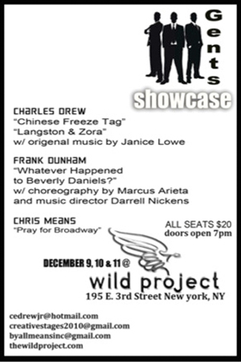

past performance |
|||
|
3 GENTS SHOWCASE Christopher Means, Frank Dunham Jr and Charles E. Drew Jr, join together to present preview performances for the premier of their original productions for 2015. CHRIS MEANS - Writer/Director presents..."Pray for Broadway" --- A play about Angels who watch over us as our guardians and their discoveries through redemption. This showcase production is the first for "Pray for Broadway" in NYC. This piece features the first three acts. This marks the debut for playwright Chris Means as a writer and director. Chris recently relocated back to New York to pursue his dreams of being a playwright. He has studied as an actor at Lee Strasberg. Theatre & Film Institute and has worked with The Absolute Theatre Group, Negro Ensemble and The Modern Day Griot Theatre Company. |
 | ||
|
FRANK DUNHAM JR - Writer/Director/Composer presents..."Whatever Happened to Beverly Daniels?" --- Beverly Daniels recalls her scandalous moments as a Hollywood starlet and a Mobster's girlfriend in this raunchy over the top musical comedy with choreography by Marcus Arieta. CHARLES E. DREW JR. - Writer/Director presents... “LANGSTON & ZORA”--- A scene from an original musical about the intense friendship and stormy artistic collaboration of Harlem Renaissance legends Langston Hughes and Zora Neale Hurston. Music written by Janice Lowe Lyrics by Charles E. Drew Jr. “CHINESE FREZZE TAG” --- A comedy about an affluent African-American family from Shaker Heights Ohio attending the D.N. C. in 2008 where Obama is nominated for President. |
|||
upcoming performances |
|||
 |
|||
| EVQ Film Festival 2018 August 20-25 |
|||
performance archives |
|||
| 2018 | 2017 | 2016 | 2015 |
| 2014 | 2013 | 2012 | 2011 |
| 2010 | 2009 | 2008 | 2007 |